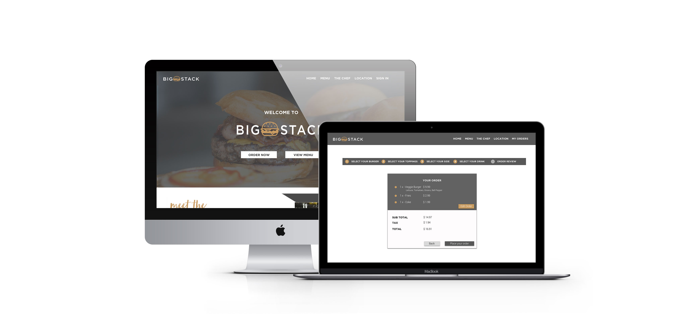
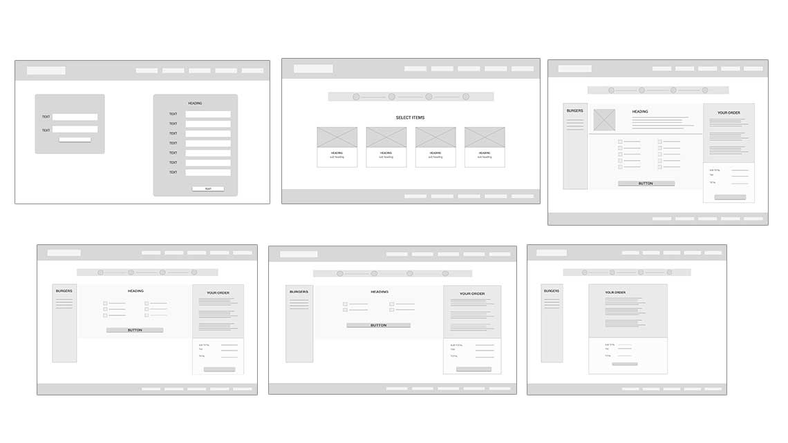
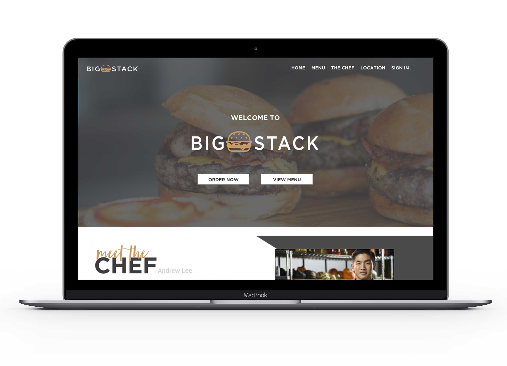

Big Stack Burger
Redesign | UX Test
About
Flipp (formerly Wishabi) was born in 2007 by former Microsoft engineers. Their vision is “a future in which consumers and retailers are connected. We feel that weekly shopping is too much work - too mundane - and we want shopping to be fun again”.1. Discuss
2. Make
3. Product
- 
- 
-

Project Details
Client: Flipp Toronto
Date: June 2016
Online: Flipp.com
Tools: Tools Photoshop | Sketch | Keynote | Invision
1. Case study
Flipp presented a case study to students regarding big stack burgers. They've noticed that the line-ups outside the trucks are getting so long that they're starting to lose customers. To address this, the company wants to build on their website and create a system where customers can place their order online, then pick it up and pay at the food truck.
2. Design Problem
The design problem facing Big Stack burger is How might we eliminate wait times to help increase revenue and gain new customers?

3. Objectives
4. Results
The case study was great! It allowed me focus on the Research and Experience and developing user personas to identify and isolate the primary audiences. As well as allowed for a more minimalistic design based on business requirements
